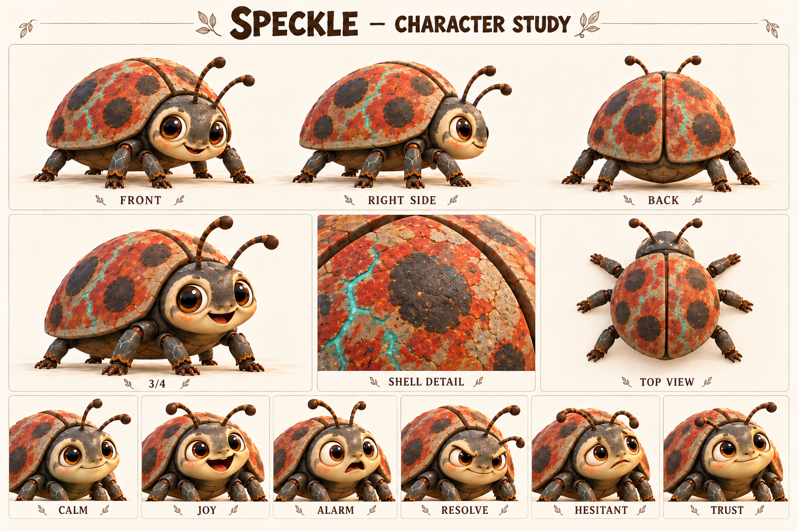

Чего хочет
Найти устойчивую опору, пищу и безопасное привычное пространство.
Стала тяжелее, но осталась той же любопытной подругой; заново учится доверять опоре.
Рабочая новая спутница Бума; живая каменная божья коровка после речного превращения.

Каменные створки; тёмные круглые пятна; красно-охристые участки; шесть лап; два усика.
Палитра: Речной серый / ржаво-красный / бирюзовые прожилки.
До реки Пятнышко была небольшой живой божьей коровкой с узнаваемыми пятнами на панцире. Бум привык встречать её возле влажного берега и оставлять ей пространство, пока нёс свои вещи. Их знакомство строилось на повторении спокойных встреч: одинаковый шаг, открытая ладонь, отсутствие погони. Это не делает её обязанной слушаться или служить ездовым животным.
В рабочей истории она соскользнула в волшебную реку. Вода начала увеличивать тело и менять панцирь на каменный. Бум лёг на берег, протянул правую руку и удерживал её, пока не вытащил на сушу. Превращение остановилось: глаза и сочленения остались живыми, лапы — подвижными. Минеральные прожилки на панцире и руке Бума показывают общую историю без поясняющей надписи.
После события привычные поверхности ведут себя иначе: тонкая ветка прогибается, старое укрытие тесно. Пятнышко сначала задерживается перед новым шагом и ищет знакомое прикосновение. Бум тоже приспосабливается к изменившейся руке, поэтому их восстановление взаимное. Будущая история может закончиться первым самостоятельным переходом по надёжному настилу: она выбирает идти сама, а Бум умеет ждать, не таща её за собой.
Найти устойчивую опору, пищу и безопасное привычное пространство.
Освоить новый вес и снова самой выбирать движение.
Неустойчивая поверхность и звук воды, связанный с пережитым событием.
Может надолго замирать перед новым участком; это реакция на перемену, не упрёк в трусости.
Устойчивость, внимание к поверхности, память на знакомые сигналы и способность постепенно пробовать снова.
Тяжёлый каменный панцирь скрывает осторожное живое существо.
Темп и ритм. Невербально: лёгкие щелчки, шорох сочленений и тяжёлые, но мягко поставленные шаги.
Слова и построение фразы. Не разговаривает. Усики, положение лап и дистанция передают намерение.
Юмор. Осторожная попытка поместиться в старое слишком маленькое укрытие без унижения персонажа.
Под давлением. Корпус ниже, усики отведены, передние лапы проверяют край.
Как проявляет заботу. Узнаёт Бума по привычному сигналу и сама касается его ладони усиком.
Чего избегать. Не давать человеческие монологи, не делать статуей, танком, грузовым инструментом или питомцем по обязанности.
| Ситуация | Реплика или действие |
|---|---|
| Узнавание · действие | Поворачивает усики к шагам Бума и выходит из тени. |
| Сомнение · действие | Проверяет настил передней лапой и снова ставит её назад. |
| Просьба о паузе · действие | Замирает; Бум останавливается вместе с ней. |
| Попытка · действие | Медленно переносит вес, пока остальные не двигаются. |
| Доверие · действие | Сама касается каменной ладони усиком. |
| Подпись карточки | «Друг тяжелее, дружба крепче» — авторская подпись. |
| Подпись на листе | Состояние | Актёрская задача |
|---|---|---|
| CALM | Покой | Усики свободны, корпус стоит ровно. |
| JOY | Радость | Глаза оживляются, усики направлены к знакомому. |
| ALARM | Испуг | Лапы ближе к корпусу, усики назад. |
| RESOLVE | Решимость | Взгляд на опору, передняя лапа медленно вытягивается. |
| HESITANT | Неуверенность | Остановленный перенос веса, усики исследуют край. |
| TRUST | Доверие | Самостоятельное приближение и расслабленные соединения. |
Движение: Шесть согласованных лап; панцирь тяжёлый, глаза и усики живые. Камень не гнётся как резина, суставы остаются подвижными.
| План | Что показывает |
|---|---|
| Общий план спереди | Силуэт, лицо, одежда, положение ступней; без потери главных признаков. |
| Боковой ракурс | Глубина фигуры, профиль лица, предметы на ремнях и посадка одежды. |
| Вид со спины | Причёска, крепления, рюкзак либо панцирь; признаки не зеркалятся. |
| Средний план в три четверти | Лицо вместе с характерным жестом и позой корпуса. |
| Крупные детали | Материал и узнаваемые предметы; особенности лица, уха, руки или панциря. |
| Шесть эмоциональных портретов | Взгляд, брови, рот и положение головы; у существ также усики, крылья и поза. |
Первый переход после реки и встреча с обычной ездовой коровкой Руты.